matplotlib¶
Par Florian Fasmeyer [1]

Introduction¶
matplotlib est une bibliothèque Python capable de produire des graphes de qualité. matplotlib peut être utilisé dans des scripts Python, le shell Python et IPython, le notebook Jupyter, des serveurs d’application web et dans quatre outils d’interface graphique.
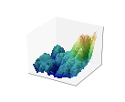 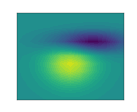 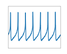 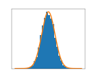Matplotlib essai de rendre les tâches simples “simples” et de rendre possible les choses compliqués. Vous pouvez générer des graphes, histogrames, des spectres de puissance (lié à la transformée de Fourier), des graphiques à bares, des graphiques d’erreur, des nuages de dispersion, etc… en quelques lignes de code.
{kind=link}
Pour des graphiques simples, le module matplotlib.pyplot fournit une
interface comme MATLAB spécialement adaptée avec IPython.
Exemple¶
Matplotlib est généralement utilisé avec numpy, permettant l’usage
de fonctions utiles comme arange() qui dans notre cas est
utilisé pour la création de valeures à intervals réguliers de 0 à 5.
Matplotlib dispose de plus d’une centaine d’exemples (NetworkX Examples) pour tous les cas possibles et imaginables.
Il vous est conseilé de vous rendre sur le site officiel et de jeter un œil à la galerie.
Cas simple¶
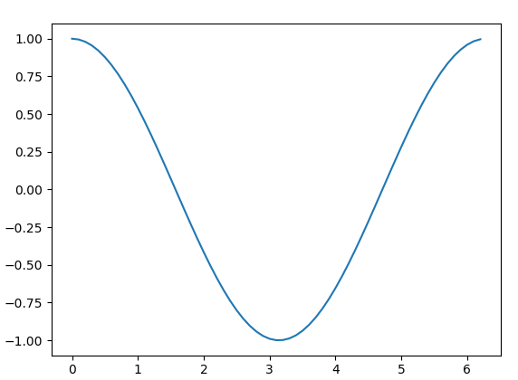"""Dessine cos(x) entre 0 et 2 PI."""
import matplotlib.pyplot as plt
import numpy as np
# [0, 0.1, 0.2, ..., pi*2)
xs = np.arange(0, 2 * np.pi, 0.1)
# calcule chaque y pour chaque x dans xs.
ys = np.cos(xs)
# dessine
plt.plot(xs, ys)
# affiche le graphe
plt.show()
Cas pratique de statistique¶
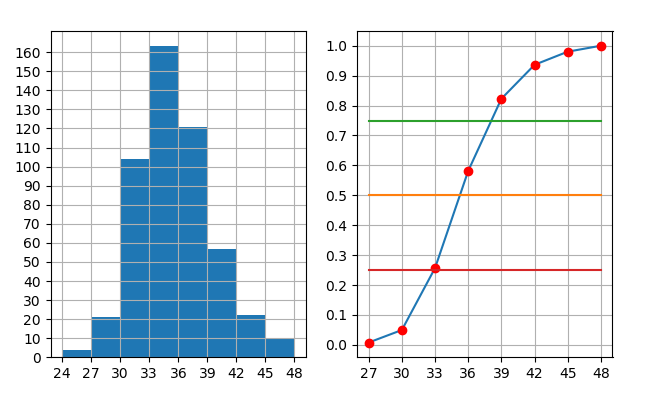"""
Fréquences cumulées et médiane.
# Made by Florian Fasmeyer 27.02.2017
"""
import matplotlib.pyplot as plt
import numpy as np
def cf(ni, n):
"""Cumule une liste de fréquences par addition."""
cumulFreq = 0
for i in ni:
cumulFreq += (i / n)
yield cumulFreq
def f(ni, n):
"""Prend une liste d'occurence et calcule la fréquence."""
for i in ni:
yield i / n
# Variables
ni = (4, 21, 104, 163, 121, 57, 22, 10)
i = len(ni)
n = sum(ni)
cash = np.arange(27, 51, 3)
frequence = list(f(ni, n))
frequence_cumule = list(cf(ni, n))
major_ticksX = np.arange(24, 51, 3)
major_ticksY = np.arange(0, 163, 10)
major_ticksX2 = np.arange(27, 51, 3)
major_ticksY2 = np.arange(0, 1.1, 0.1)
# Mod
mod = (cash[2] + (cash[3] - cash[2]) * (ni[3] - ni[2]) /
((ni[3] - ni[2]) + (ni[3] - ni[4])))
# Médiane
ccf = list(cf(ni, n))
med = (0.5 - ccf[2]) * (cash[3] - cash[2]) / (ccf[3] - ccf[2]) + cash[2]
print(f"médiane = {med:.3f}")
print(f"mod = {mod:.3f}")
# Plot Graphes
fig = plt.figure()
# fig1
ax = fig.add_subplot(1, 2, 1)
ax.set_xticks(major_ticksX)
ax.set_yticks(major_ticksY)
plt.subplot(121)
plt.grid(True)
a = np.empty(8)
bins = np.arange(24, 51, 3)
plt.hist(np.arange(24, 48, 3), bins, weights=ni)
# fig2
ax = fig.add_subplot(1, 2, 2)
ax.set_xticks(major_ticksX2)
ax.set_yticks(major_ticksY2)
plt.subplot(122)
plt.grid(True)
plt.plot(np.arange(27, 51, 3), ccf)
plt.plot(np.arange(27, 51, 3), ccf, "ro")
a = np.empty(8)
a.fill(0.5)
plt.plot(np.arange(27, 51, 3), a)
a.fill(0.75)
plt.plot(np.arange(27, 51, 3), a)
a.fill(0.25)
plt.plot(np.arange(27, 51, 3), a)
plt.show()
Cas particulier avec toolkits pour la 3D¶
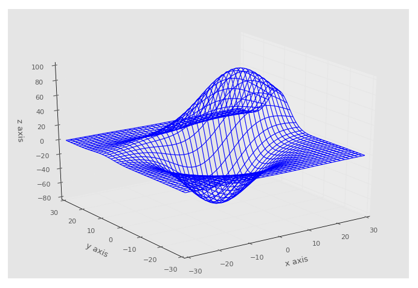"""
Plot 3D.
source : PythonProgramming.net
"""
import matplotlib.pyplot as plt
from matplotlib import style
from mpl_toolkits.mplot3d import axes3d
style.use('ggplot')
fig = plt.figure()
ax1 = fig.add_subplot(111, projection='3d')
x, y, z = axes3d.get_test_data()
ax1.plot_wireframe(x, y, z, rstride=3, cstride=3)
ax1.set_xlabel('x axis')
ax1.set_ylabel('y axis')
ax1.set_zlabel('z axis')
plt.show()
How to¶
Liste non exhaustive expliquant comment utiliser matplotlib. Le but est d’expliquer simplement des conceptes sur lesquels vous risquez autrement de perdre du temps.
N’hésitez pas à visiter la page de Pyplot tutorial sur le site officiel si vous comprenez l’anglais ou le code.
{kind=link}
Conseil, regardez les fonctions suivantes en détail
- plot(*args, **kwargs)
- triplot(*args, **kwargs)
- bar(left, height, width=0.8, bottom=None, hold=None, data=None, **kwargs)
- hist(x, bins=None, …, **kwargs)
- boxplot(x, notch=None, …)
À faire
Il manque les liens intersphinx.
Graphique simple¶
Le plot() est la fonction la plus importante de
matplotlib (on se demande pourquoi), pour cette raison il vous est
recommandé de regarder la doc matplotlib.pyplot en détail.
# Florian Fasmeyer 23.03.2017
"""De la statistique fait rapidement :-)."""
import matplotlib.pyplot as plt
centreClasse = [44, 46, 48, 50, 52, 54, 56]
effectifs = [2, 3, 7, 11, 8, 6, 3]
x = centreClasse
y = effectifs
plt.bar(x, y, align='center', facecolor='green', alpha=0.75) # histograme
plt.plot(x, y, 'r--', linewidth=1)
plt.show()
Lignes, points, tirets¶
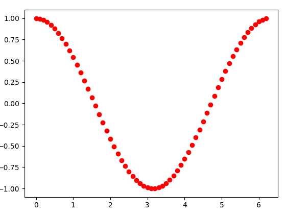Pour changer l’affichage de ligne à points ou traitillé, il suffit d’ajouter
un argument au moment de plot! Voir plot().
"""Affiche des points."""
import matplotlib.pyplot as plt
import numpy as np
xs = np.arange(0, 2 * np.pi, 0.1)
ys = np.cos(xs)
# r -> red
# o -> dot
plt.plot(xs, ys, "ro")
plt.show()
Axes et axes mineurs¶
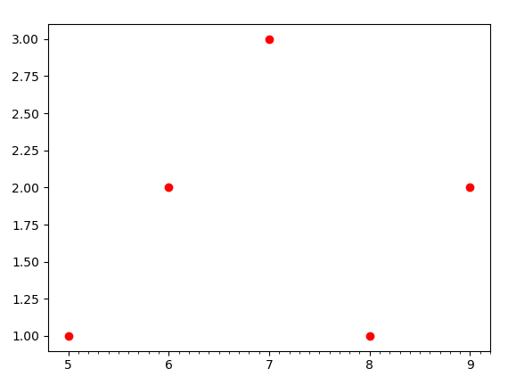Pour modifier les axes l’on a besoin d’un objet que subplot retourne, d’où
l’étrange subplot(111).
Vous remarquerez l’axe mineur, qui s’affiche tous les \(0.1\) ticks.
Dans cet exemple l’on ne touche qu’à “x”. “y” est en mode par défaut, il se met
directement à la bonne position. Notez bien qu rien ne vous empèche de faire
des échelles étranges ou logarithmiques. Voir numpy.
{kind=link}
"""plot un axe tout mignon."""
import matplotlib.pyplot as plt
import numpy as np
fig = plt.figure()
# de 5 à 10, par saut de 1 [5,6,7,8,9]
axe_x = np.arange(5, 10, 1)
axe_x_mineur = np.arange(5, 10, 0.1)
ax = fig.add_subplot(111)
ax.set_xticks(axe_x)
ax.set_xticks(axe_x_mineur, minor=True)
# pour axe_x, donner var Y
plt.plot(axe_x, [1, 2, 3, 1, 2], "ro")
plt.show()
Afficher plusieurs graphes¶
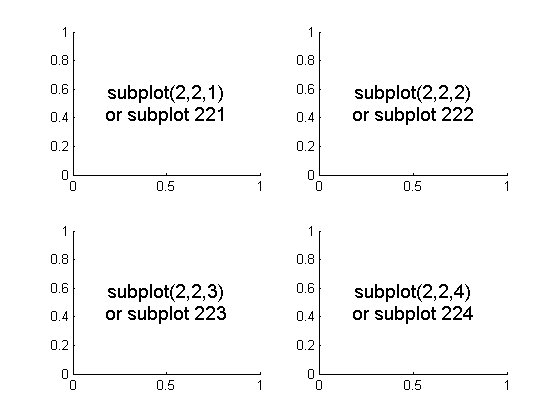# source: stackoverflow
"""exemple subplot."""
import matplotlib.pyplot as plt
fig = plt.figure()
# subplot(taille_x, taille_y, position)
fig.add_subplot(221) # haut gauche
fig.add_subplot(222) # haut droite
fig.add_subplot(223) # bas gauche
fig.add_subplot(224) # bas droit
plt.show()
Vous pouvez aussi produire des assemblements asymétriques:
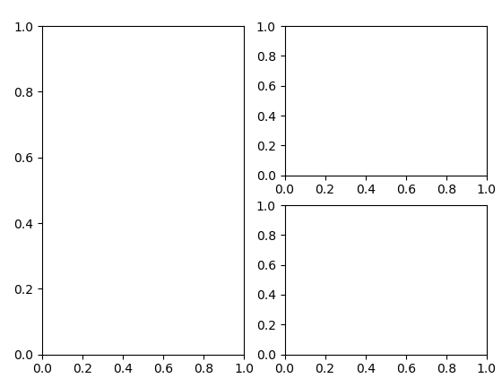# Florian Fasmeyer 22.03.2017
"""exemple subplot cas spécial."""
import matplotlib.pyplot as plt
fig = plt.figure()
# subplot(taille_x, taille_y, position)
fig.add_subplot(1, 2, 1) # taille(1,2) position(1)
fig.add_subplot(222)
fig.add_subplot(224)
plt.show()
Conclusion¶
Matplotlib est une bibliothèque extraordinaire permettant de gagner beaucoup de temps dans les applications nécessitant un affichage de données sous forme de graphiques.
Crédits¶
Matplotlib est un projet par John Hunter (1968 - 2012) qui à l’aide de nombreux contributeurs, ont donné une quantité incommensurable de travail dans la production de ce software. Dans le cas ou Matplotlib contribue à un projet menant à des publications scientifiques, il vous est prié de faire reconnaitre ce travail en le citant dans votre projet. Vous pouvez utiliser cette citation prête à l’usage.
Sources¶
- Matplotlib.org
- PythonProgramming.net
- StackOverflow.com subPlot
| [1] | <florian.fasmeyer@he-arc.ch> |